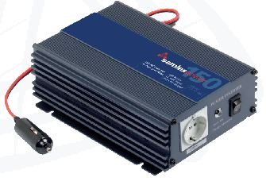

Inverters convert DC power to AC power, letting the DC energy generated by solar panels run common industrial and household AC appliances. We carry pure sine wave inverters suited to sensitive electronics and motor loads.

Pure sine wave inverters for delicate electronics and variable-speed motor control. Low-frequency switching with a toroidal transformer delivers high efficiency and strong surge capability.
Converts DC from solar modules into clean AC with integrated microprocessor control. Light, long-lived and efficient — ideal for mobile applications.
Pure sine wave inverter designed for rural PV electrification, solar home systems, schools and remote applications, with improved load handling and very high reliability.
Tell us your appliances and surge needs and we will match the right inverter.